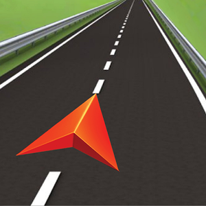

The goal of this site is to showcase my web design skills, i hope you have an easy experience and you come out of this website with some knowledge that you did not already have, this website is about the use of technology in sports, i will be talking about things related to sports as well. I have provided as much help as i can, naturally you should understand the site as you navigate, at first it will be a new experience but once you familiarize yourself it should be easy going for you.
The most popular sports will be discussed and the sports with the most varied and the most advanced technologies can be found on this website, the role of technology on sport is huge for the athletes, the coaches and also the Fans. With regard to the athletes the technology can be used to benefit them in many ways such as nutrition and fitness, coaches can benefit from technology with regard to statistics on players movement such as there distance covered, the amount of take-ons they have done as well as fitness levels this can help them pick players for the matches and even scout players.
It would be hard to see sport without technology as it has dramatically become and ever present and very powerful, without technology it is without a doubt that players would burn out far quicker, in terms of playing time, and fans would also suffer as they would not be able to see their team play
Atheltes need to be fit, especially in sports such as running, the use of fitness technologies such as fitness trackers, meal planners and detailed nutrition all come in handy with the aid of technology.
The navigation of the site should be fairly straighforward for you to follow, the navbar at the top will take you to the pages you want to visit, and there are internal links on the site which can be found on the technology section, this should be easy for you to see once you have hovered over an image, text will appear stating the page you will be taken to once you have clicked on the icon. 